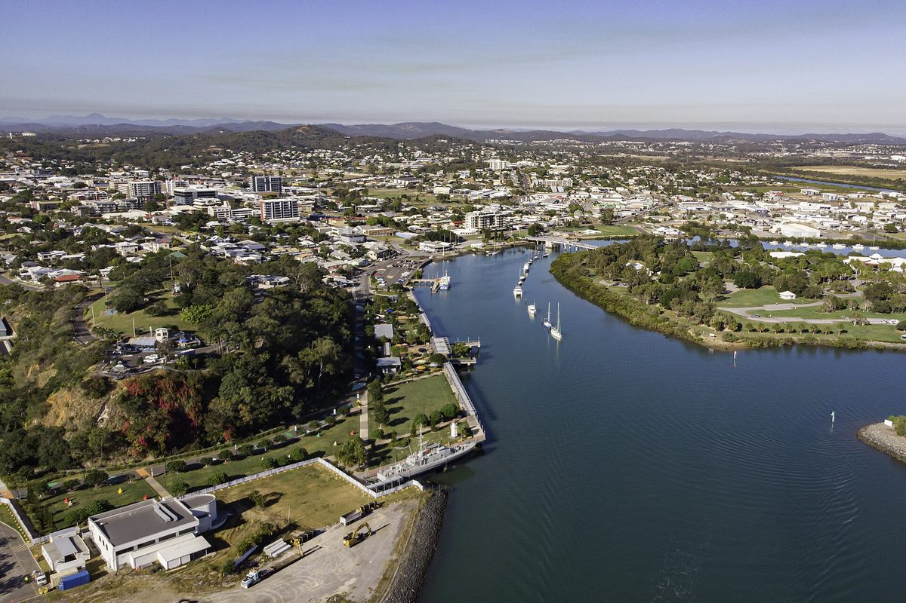

덴마크 European Energy, 호주 퀸즐랜드 태양광 3곳에 원주민 전통 소유자와 30년 공동 번영 협약

1.1GW 어퍼캘리오프 등 태양광·저장 사업에 문화유산 관리·장기 지역 기금 두 협약…기금 규모는 비공개, 연방 입찰은 원주민 지분·수익 공유 5% 이상 사업에 500MW 따로 배정
덴마크 재생에너지 개발사 European Energy가 호주 퀸즐랜드주에서 추진하는 태양광·저장 사업 3곳을 두고 지역 원주민 전통 소유자들과 30년짜리 협약을 맺었다. 상대는 번다버그·글래드스톤 지역의 전통 소유자이자 원주민 권원 보유자인 Bailai·Gurang·Gooreng Gooreng·Taribelang Bunda 부족을 대표하는 FNBGGGTB 그룹으로, 두 쪽이 2024년 맺은 독점 협약을 바탕으로 했다. 협약은 개발 과정에서 문화유산을 찾아 지키는 방법을 정한 문화유산 관리 협약과, 전통 소유자가 고른 사회·문화·환경 사업에 사업 기간 내내 자금을 대는 공동 번영 협약 두 가지이며, 회사는 공동 번영 자금의 규모와 산정 방식을 밝히지 않았다. 대상은 글래드스톤 남서쪽 약 50km의 1.1GW 어퍼캘리오프(Upper Calliope, 2025년 12월 계획 승인, Rio Tinto와 25년 전력구매계약), 부카 인근의 최대 97MWac 불리어드(Bullyard), 아직 개발 승인 전인 약 400MW 타이론(Tyrone)이다. 연방정부는 지난 7월 용량투자제도(CIS) 9차 입찰에서 원주민 협력자에게 5% 이상 지분이나 수익을 나누는 발전사업 몫으로 500MW를 따로 떼어 놓았다. FNBGGGTB 그룹의 매슈 쿡(Matthew Cooke) 최고경영자는 재생에너지 전환이 원주민에게 큰 기회가 된다고 말했다.
시민에너지 관점
1.1GW 규모 사업에 30년 이익공유 협약이 붙고, 연방 입찰이 원주민 지분·수익 공유 5% 이상 사업에 500MW를 따로 떼어 준 것은 지역 공동체의 몫을 제도가 요구하기 시작했다는 신호로 보인다. 기금 규모조차 공개되지 않은 협약으로는 지역이 실제로 무엇을 얻는지 알 수 없다는 우려도 당연하다. 그래서 지역의 몫은 개발사가 정하는 기금이 아니라 지분과 수익 배분 비율처럼 숫자로 정해진 권리여야 하고, 땅의 주인이 사업의 주인이 되는 구조로 나아가야 한다. 국내 대규모 태양광·풍력 입찰도 주민 지분과 수익 공유를 가산점에 그치지 않고 별도 물량과 최소 비율로 정해야 한다.
출처: PV Tech 2026-10-22 George Heynes 원문 보기
デンマークのEuropean Energy、豪クイーンズランド州の太陽光3カ所で先住民の伝統的所有者と30年の共同繁栄協定
1.1GWのアッパー・カリオペなど太陽光・蓄電事業で文化遺産管理と長期の地域基金の二つの協定…基金規模は非公表、連邦入札は先住民の出資・収益分配5％以上の事業に500MWを別枠で配分
デンマークの再生可能エネルギー開発会社European Energyが、オーストラリア・クイーンズランド州で進める太陽光・蓄電事業3カ所について、地域の先住民の伝統的所有者と30年間の協定を結んだ。相手はバンダバーグ・グラッドストーン地域の伝統的所有者で先住権原の保有者でもあるBailai、Gurang、Gooreng Gooreng、Taribelang Bundaの各部族を代表するFNBGGGTBグループで、両者が2024年に結んだ独占協定を土台にしている。協定は、開発の過程で文化遺産を特定して守る方法を定めた文化遺産管理協定と、伝統的所有者が選んだ社会・文化・環境の取り組みに事業期間を通じて資金を出す共同繁栄協定の二つで、同社は共同繁栄資金の規模や算定方法を明らかにしていない。対象は、グラッドストーンの南西約50kmにある1.1GWのアッパー・カリオペ（Upper Calliope、2025年12月に計画承認、Rio Tintoと25年の電力購入契約）、ブッカ近郊の最大97MWacのブルヤード（Bullyard）、まだ開発承認前の約400MWのタイロン（Tyrone）だ。連邦政府は7月、容量投資制度（CIS）第9回入札で、先住民のパートナーに5％以上の出資または収益分配を約束する発電事業向けに500MWを別枠で確保した。FNBGGGTBグループのマシュー・クック（Matthew Cooke）最高経営責任者は、再エネ転換は先住民にとって大きな機会になると語った。
市民エネルギーの視点
1.1GW規模の事業に30年の利益共有協定が付き、連邦入札が先住民の出資・収益分配5％以上の事業に500MWを別枠で用意したことは、地域社会の取り分を制度が求め始めた兆しとみられる。基金の規模さえ公表されない協定では、地域が実際に何を得るのかわからないという懸念ももっともだ。だからこそ地域の取り分は、開発会社が決める基金ではなく、出資比率や収益分配率のように数字で定められた権利でなければならず、土地の持ち主が事業の持ち主になる仕組みへ進むべきだ。韓国の大規模太陽光・風力の入札も、住民の出資と収益共有を加点にとどめず、別枠の容量と最低比率として定めるべきだ。
出典: PV Tech 2026-10-22 George Heynes 原文を読む
丹麦European Energy就澳大利亚昆士兰3个光伏项目与原住民传统所有者签署30年共同繁荣协议
涉及1.1GW上卡利奥普等光伏加储能项目，包括文化遗产管理和长期社区基金两类协议…基金规模未公开，联邦招标为原住民股权或收益分享5%以上的项目单列500MW
丹麦可再生能源开发商European Energy就其在澳大利亚昆士兰州推进的3个光伏加储能项目，与当地原住民传统所有者签署了为期30年的协议。签约对象是代表Bailai、Gurang、Gooreng Gooreng和Taribelang Bunda族群的FNBGGGTB集团，这些族群是班达伯格和格拉德斯通地区的传统所有者及原住民土地权利持有人；协议以双方2024年签署的独家协议为基础。协议分为两类：一类是规定开发过程中如何识别和保护文化遗产的文化遗产管理协议，另一类是在项目存续期间为传统所有者选定的社会、文化和环境项目提供资金的共同繁荣协议；公司未披露共同繁荣资金的规模及计算方式。涉及项目包括位于格拉德斯通西南约50公里、装机1.1GW的上卡利奥普（Upper Calliope，2025年12月获规划批准，与Rio Tinto签有25年购电协议），布卡附近最高97MWac的Bullyard，以及尚未获得开发批准、约400MW的Tyrone。联邦政府今年7月在容量投资计划（CIS）第9轮招标中，为承诺向原住民合作方提供至少5%股权或收益分享的发电项目单列了500MW。FNBGGGTB集团首席执行官Matthew Cooke表示，可再生能源转型为原住民带来了重大机遇。
市民能源视角
1.1GW规模的项目附带30年利益共享协议，联邦招标又为原住民股权或收益分享5%以上的项目单列500MW，这看来是制度开始要求为地方社区留出份额的信号。连基金规模都不公开的协议，让人无法知道地方究竟能得到什么，这种担忧也理所当然。正因如此，地方的份额不应是开发商决定的基金，而应是像持股比例和收益分配比例那样以数字确定的权利，并朝着土地的主人成为项目主人的结构迈进。韩国的大型光伏和风电招标也应把居民持股和收益共享从加分项提升为单列容量和最低比例。
来源: PV Tech 2026-10-22 George Heynes 查看原文
Denmark's European Energy signs 30-year shared prosperity agreements with Traditional Owners for three Queensland solar projects
Cultural heritage and long-term community funding deals cover solar-plus-storage projects including the 1.1GW Upper Calliope; funding value undisclosed, as a federal tender sets aside 500MW for projects with at least 5% First Nations equity or revenue sharing
Danish renewable energy developer European Energy has signed 30-year agreements with local Traditional Owners covering three solar-plus-storage projects it is developing in Queensland, Australia. The counterpart is the FNBGGGTB Group, which represents the Bailai, Gurang, Gooreng Gooreng and Taribelang Bunda peoples, the Traditional Owners and native title holders of the Bundaberg and Gladstone regions, and the deals build on an exclusivity agreement the two sides signed in 2024. There are two sets of agreements: cultural heritage management agreements that set out how important sites and artefacts will be identified and protected during development, and shared prosperity agreements that fund social, cultural and environmental initiatives chosen by the Traditional Owners over the life of the projects, though the company has not disclosed the size of that funding or how it will be calculated. The projects are the 1.1GW Upper Calliope about 50km south-west of Gladstone, which won planning approval in December 2025 and has a 25-year power purchase agreement with Rio Tinto, the Bullyard project of up to 97MWac near Bucca, and the roughly 400MW Tyrone, which has yet to receive development approval. In July the federal government reserved 500MW in Capacity Investment Scheme Tender 9 for generation projects that commit at least 5% equity or revenue sharing to First Nations partners. Matthew Cooke, group chief executive of the FNBGGGTB Group, said the renewables transition offers great opportunities for First Nations people.
Citizen Energy View
A 30-year benefit-sharing deal attached to a 1.1GW project, and a federal tender that sets aside 500MW for projects with at least 5% First Nations equity or revenue sharing, look like signs that policy has begun to demand a share for local communities. It is fair to worry that an agreement whose funding is not even disclosed leaves communities unable to know what they will actually receive. That is why the local share should be a right fixed in numbers, such as equity stakes and revenue-sharing rates, rather than a fund set by the developer, moving toward a model in which the owners of the land become owners of the project. Korea's large solar and wind tenders should likewise treat resident equity and revenue sharing not as bonus points but as separate capacity with minimum shares.
Source: PV Tech 2026-10-22 George Heynes Read the original